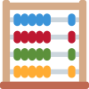

sbmlsim: SBML simulation made easy


sbmlsim is a collection of python utilities to simplify simulations with SBML models implemented on top of roadrunner. Source code is available from https://github.com/matthiaskoenig/sbmlsim.
Features include among others
- simulation experiments
- simulation reports
- parameter fitting
- sensitivity analysis
Documentation is available from https://matthiaskoenig.github.io/sbmlsim/. If you have any questions or issues please open an issue.
Installation
sbmlutils is available from pypi and can be installed via
pip install sbmlsimDevelop version
The latest develop version can be installed via
pip install git+https://github.com/matthiaskoenig/sbmlsim.git@developHow to cite

License
- Source Code: MIT
- Documentation: CC BY-SA 4.0
Funding
Matthias König is supported and by the German Research Foundation (DFG) within the Research Unit Programme FOR 5151 “QuaLiPerF (Quantifying Liver Perfusion-Function Relationship in Complex Resection - A Systems Medicine Approach)” by grant number 436883643 and by grant number 465194077 (Priority Programme SPP 2311, Subproject SimLivA).
Matthias König was supported by the Federal Ministry of Education and Research (BMBF, Germany) within the research network Systems Medicine of the Liver (LiSyM, grant number 031L0054).
Development
Install dev dependencies:
To setup everything for the develop environment use
# install core dependencies
uv sync
# install dev dependencies
uv pip install -r pyproject.toml --extra dev
uv tool install tox --with tox-uv
uv pip install pre-commit
pre-commit install
pre-commit runTesting
Testing is performed with tox Run single tox target
tox r -e py314Run all tests in parallel
tox run-parallelDocumentation
If you haven’t already, you’ll need to install Quarto.
© 2019-2026 Matthias König